My Mother
My Lovely Mother
A source of quiet strength, endless prayers, and unconditional warmth. Her guidance has shaped my character at every single turn.
A Story Worth Celebrating
Some stories are written in books. Hers was written in a Christian home, a school stage, a family that stayed, and a voice meant for the sanctuary.
10 chapters · 27 photographs · 13 videos
“I grew up in a Christian home. Before the world made noise, my parents and siblings guided my first steps — teaching me how to pray, how to stand firm, and who to trust.”
Growing up under their care gave me deep roots. They taught me to weigh advice carefully and helped me steer away from voices that could have led me somewhere I did not belong.
Those quiet, foundational days set the rhythm for everything that would follow.
“My heart was pounding, but singing was where my spirit felt completely free.”
From Junior High to Senior High, every classroom and every friendship taught me resilience. But the moment that stands out brightest was standing on that stage in SHS, contesting for Best Vocalist.
Those school days taught me that who I am is not decided by the crowd, but by the purpose God placed inside me.
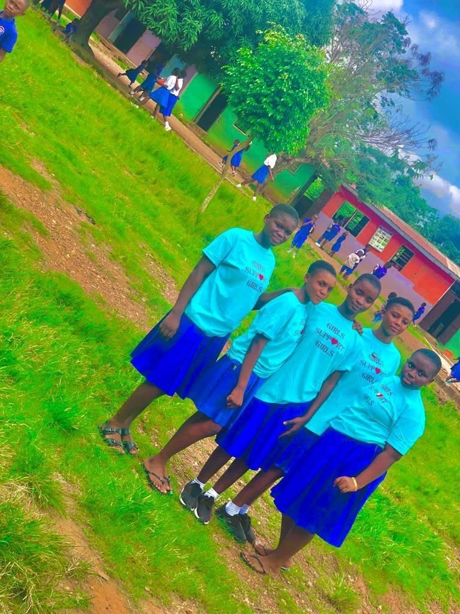
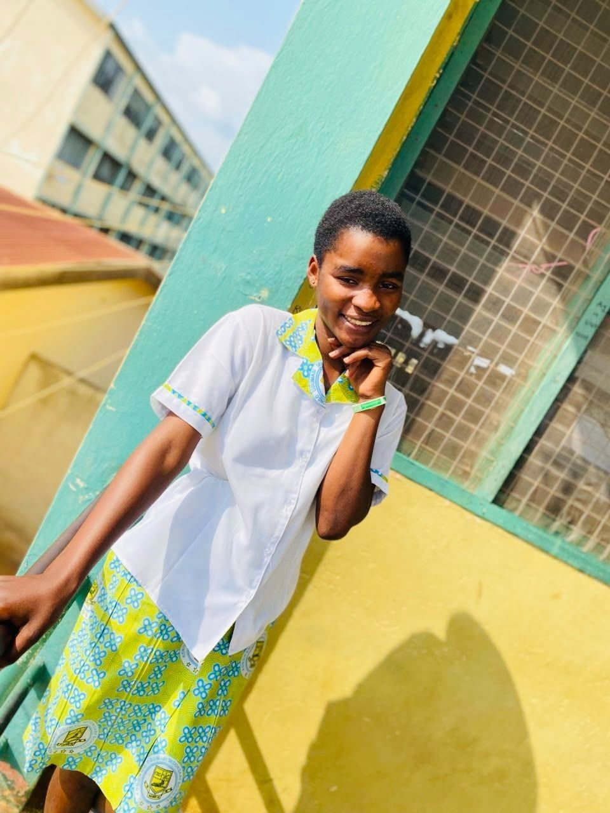
My parents and siblings are among the most important people in my life. One of the deepest desires of my heart is to make my parents proud — and to make Heaven proud of me.
A source of quiet strength, endless prayers, and unconditional warmth. Her guidance has shaped my character at every single turn.
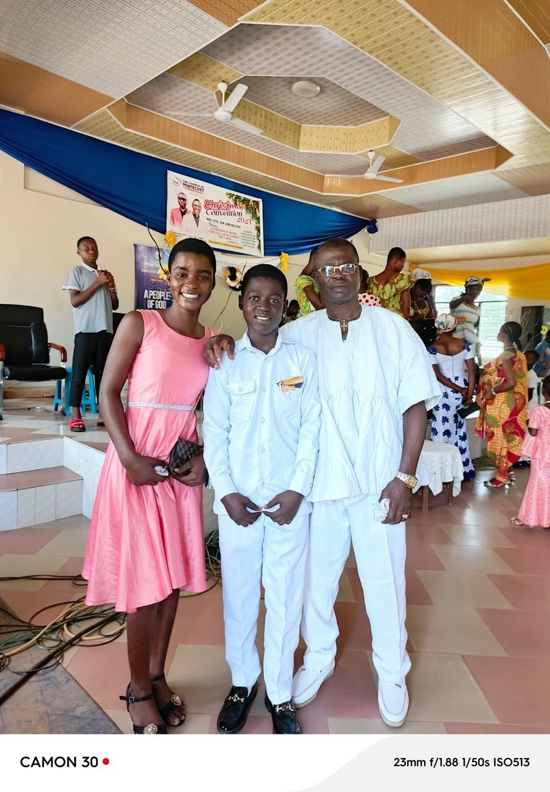
A pillar of wisdom, protection, and steady guidance. His presence reminds me every day of dignity, patience, and honour.
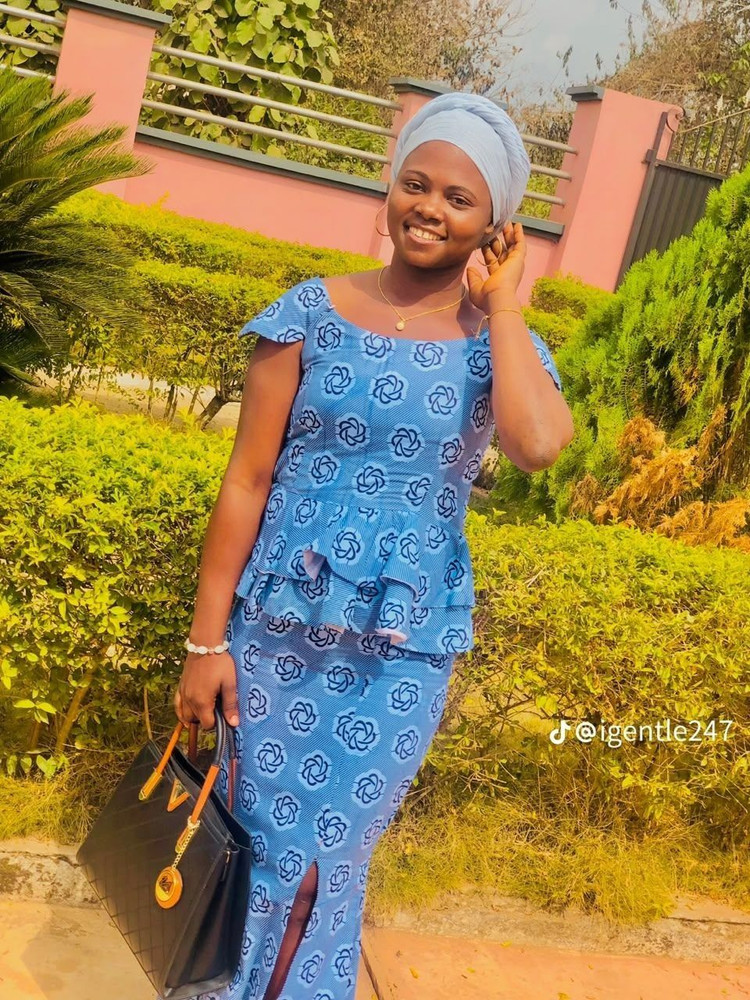
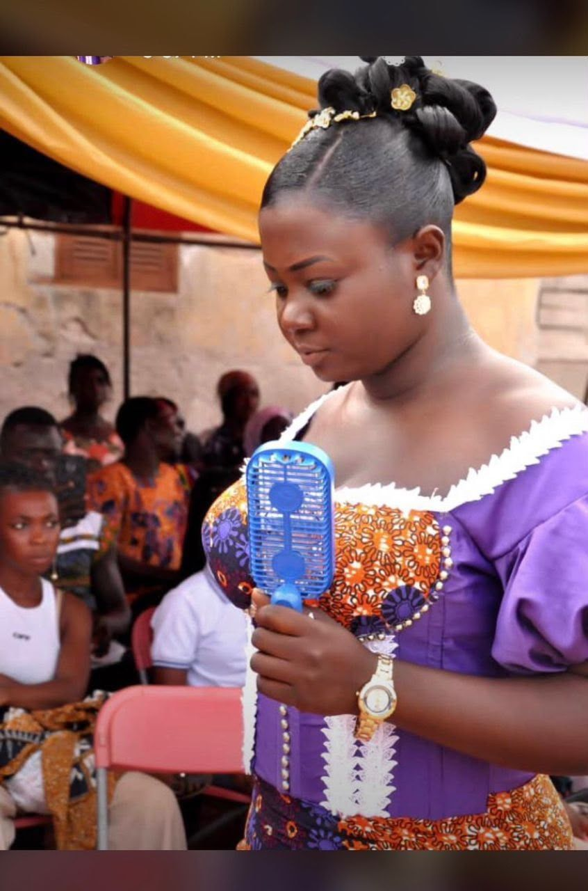
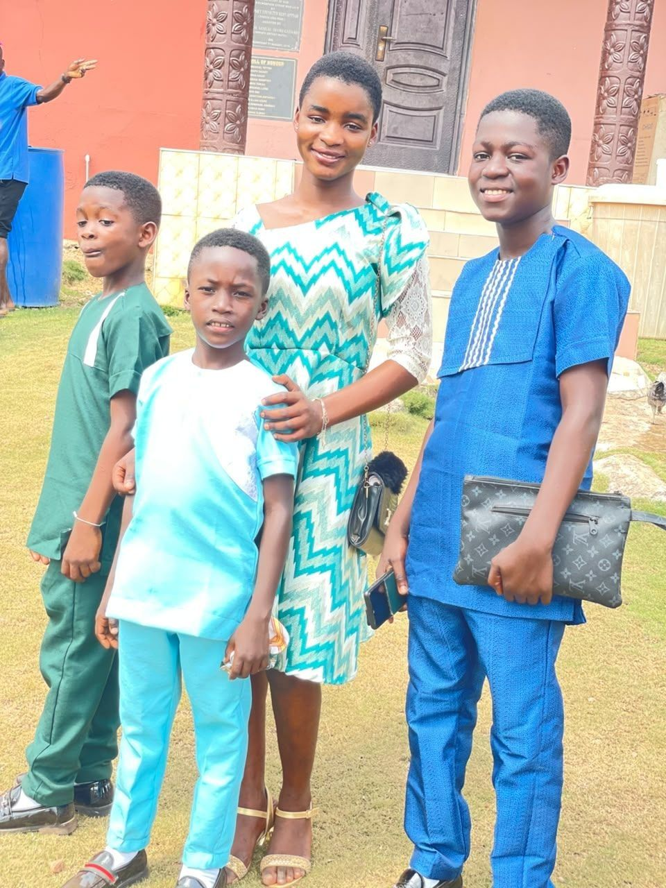
Some friendships fade when things get difficult. The genuine ones stay. God placed people in my journey who bring real joy and stand firm with me.
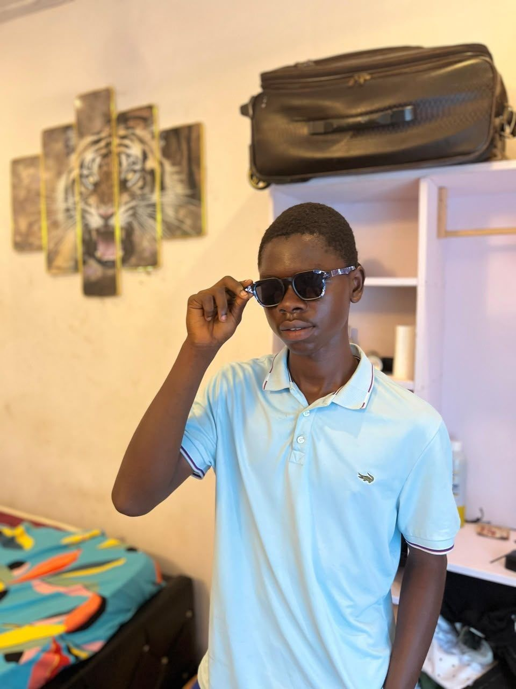
“Elijah has been with me through thick and thin. He gives me honest advice, shows love and care, and stays by my side even when I can be stubborn.”
A true friend who listens, checks on my growth, and never wavers in support.
Shared laughter, honest banter, and steadfast companionship.
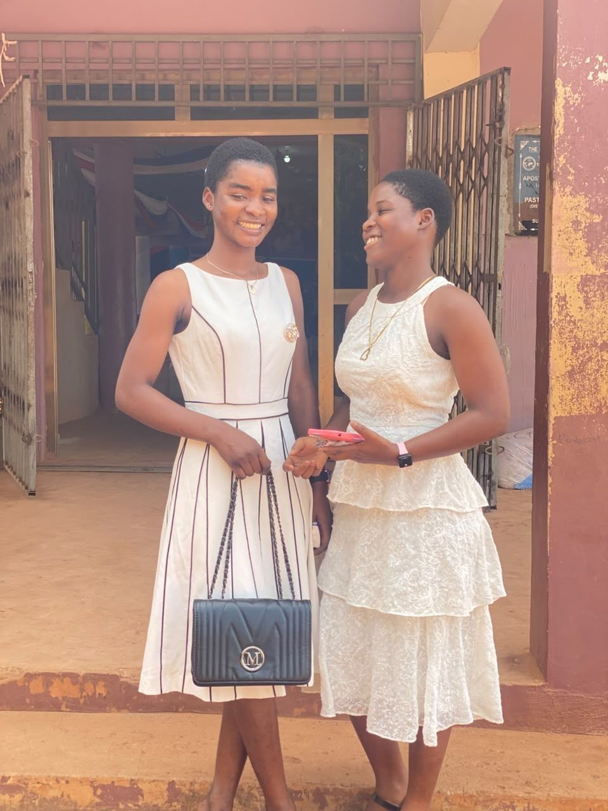
The one who challenges me, corrects me, and still stays.
A cherished friend who brings warmth and shared smiles.
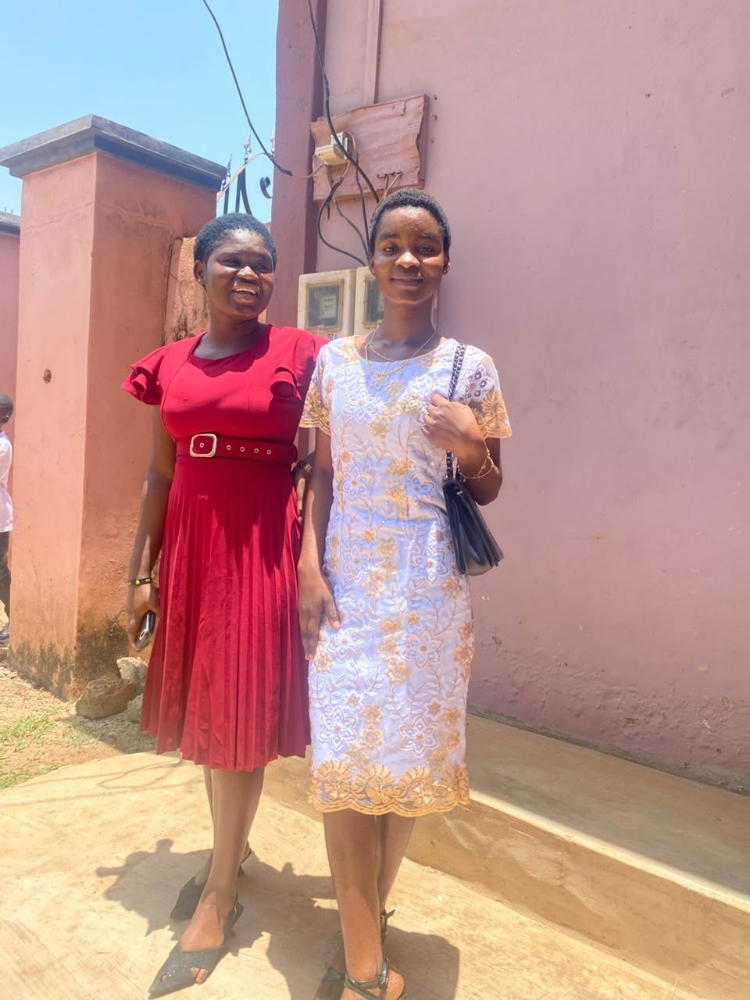
Kindness that shows up quietly, exactly when it is needed.
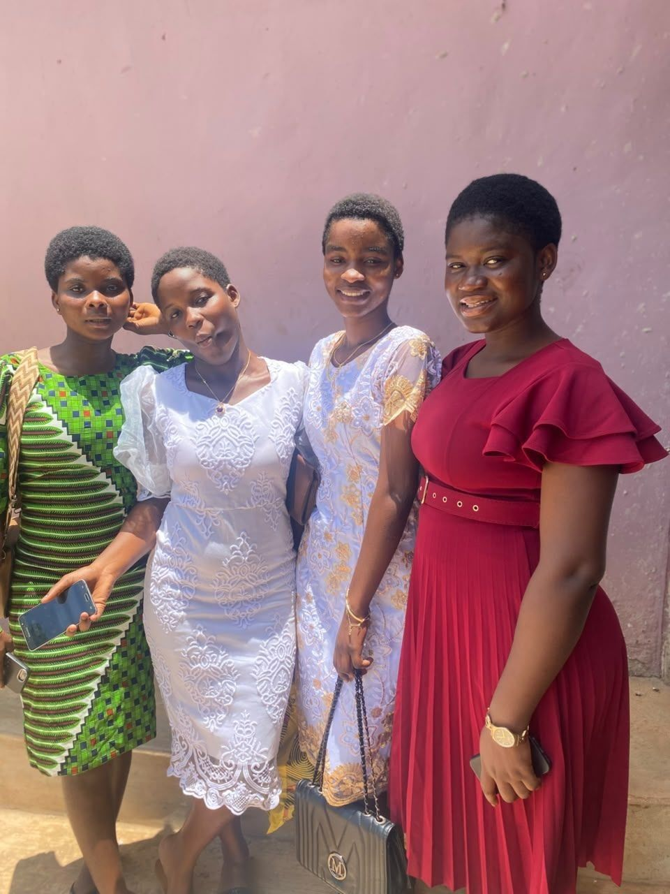
Unfiltered moments of community, laughter, and belonging.
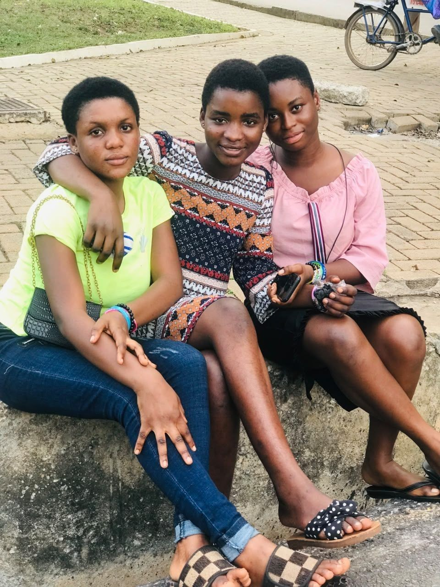
Cherished company and warm memories that keep me grounded.
“Do not be anxious about anything, but in every situation, by prayer and petition, with thanksgiving, present your requests to God.”Philippians 4:6
My life experiences taught me to live without depending on anyone else but God. Through every challenge, His grace has carried me through.
“Pastor Paul never gave up on me. He fought for my dreams, cared about my happiness, served as a father figure, and became a true blessing in my journey.”
Singing and listening to music are woven into who I am. One of my greatest callings is to become a good gospel musician and minister unto the Lord through song.
Singing with the Melody Singers has been a cornerstone of my spiritual life. And listening to Mama Esther inspires my walk and my music every single day.
Tap Play and turn up your phone volume.
“Today, I am working as a teacher, pouring guidance and knowledge into the lives of young minds, while diligently working toward furthering my education at university.”
I want to live a holistic life, grow in my faith, and make my parents proud in all that I do.
Banku & okra stew with meat
Treasure in the Sky · Best Friends in the World
White · Pink · Blue
Mama Esther
My dreams are anchored in purpose. Looking ahead, I am pressing forward toward every goal God has placed in my heart.
Furthering my education at university to serve meaningfully in agriculture.
Becoming a good gospel musician and ministering unto the Lord through music.
Growing deeper in faith, integrity, and prayer every single day.
Making my parents proud and walking in a way that pleases God.
“My life experiences taught me to live without depending on someone else but God.”
Every photograph and every clip holds a piece of my journey. Filter through the memories, or open any one of them to see it in full.
Childhood, family, school, friendship, and today — gathered together as one small reminder of how far I have come.
My favorite memories are not just pictures. They are living reminders of who I am and the people who carried me through each chapter.
After walking through your childhood, your family, your friendships, your faith, your music, and your dreams — there is one more thing left to say.
Knowing you and seeing how passionately you love God, how deeply you honour your parents, and how faithfully you stand by your values is truly inspiring.
As your best friend, I wanted to create an experience that honours your story — not just where you have been, but who you are becoming.
May this new year of your life open the doors you have prayed for. May your voice minister to thousands, may your education rise to higher heights, and may your heart always be filled with peace and joy.
With love, prayers, and deep gratitude,
Robert
If you know her, leave her a word. If you are sharing this with her, pass it on.